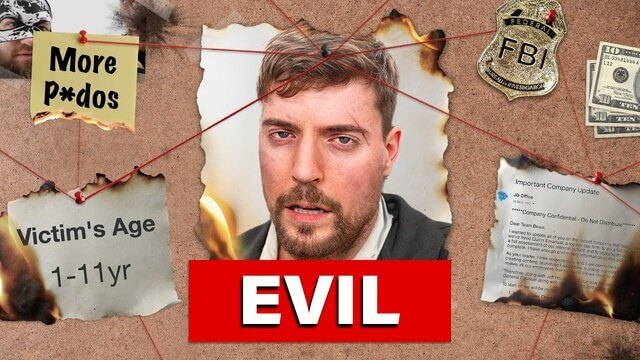

Famous for his kid freindly content with generous prizes and giveaways is he really the good persion his videos make him out to be?
Summary of Crime/Allegation
While Mr. Beast denied knowing of Ava Tyson's allegations, there is proof he knew about it and did nothing until the allegations came out.
For some Context Ava Tyson was a fromer co-host in Mr. Beast channel and later had grooming allegations
Convections: N/A